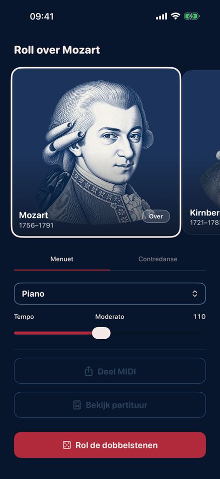
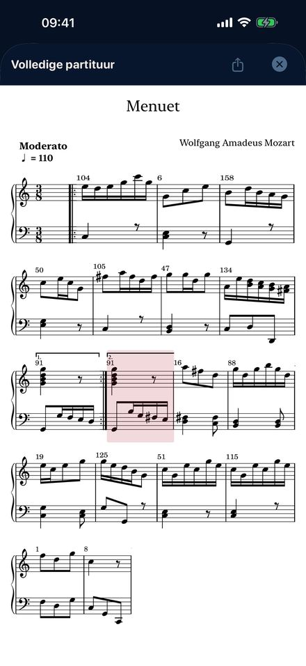
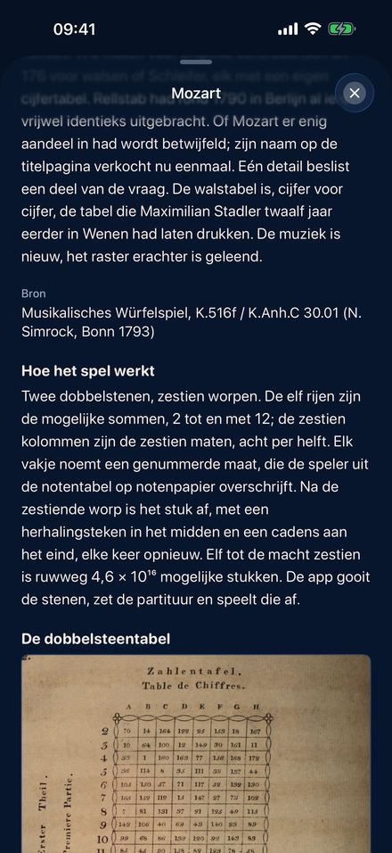
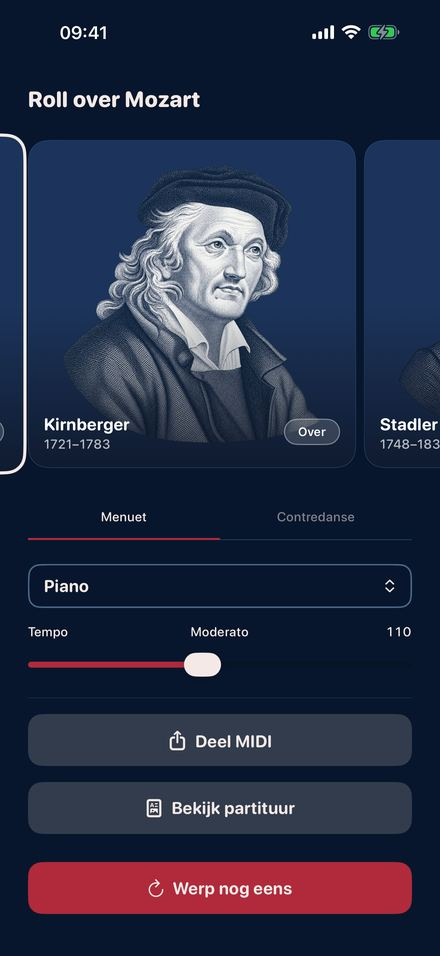

In de achttiende eeuw verschenen drukken waarmee iedereen muziek kon componeren
door te dobbelen. Elke worp wees een genummerde maat aan in een tabel. Zestien
worpen leverden een afgerond stuk op, in de juiste toonsoort, met een nette
cadens aan het slot, en je hoefde er geen noot voor te kunnen lezen. Roll Over
Mozart speelt vier van die spellen, maat voor maat volgens de originele
tabellen.
Binnenkort in de App Store.

Gooi de dobbelstenen

De partituur van je worp

De originele tabel

Vier componisten
Vier gedrukte spellen
MozartHet Musikalisches Würfelspiel dat in 1793 onder zijn naam in Bonn verscheen: een menuet en een Engelse contradans, elk 176 genummerde maten, twee dobbelstenen, zestien worpen.
KirnbergerBerlijn 1757, het oudste van allemaal. Een menuet en trio met één dobbelsteen, en een polonaise van 154 maten met twee.
StadlerWenen 1781. Een menuet en trio van een benedictijn die zowel Mozart als Haydn goed kende, gedrukt twaalf jaar voordat het Mozart-spel zijn cijferraster overnam.
C.P.E. BachZes maten dubbel contrapunt “zonder de regels te kennen”. Elke bovenstem past op elke onderstem, en Bach vertelt zijn grap met een uitgestreken gezicht.
Wat je ermee doet
Gooien, en je hoort het meteen.
Instrument en tempo veranderen terwijl het stuk speelt.
De partituur van je eigen worp meelezen, maat voor maat, terwijl hij klinkt.
Hem meenemen: bladmuziek als pdf, of een MIDI-bestand voor elk muziekprogramma.
Het verhaal van elke druk lezen, met de originele dobbelsteentabel en de pagina's met genummerde maten.
Hier wordt niets bedacht
Elke maat is geschreven door de componist en gedrukt in de achttiende eeuw,
overgenomen zonder dat er een noot is veranderd. De dobbelstenen bepalen alleen
de volgorde, precies zoals het bedoeld was. Dit is de oudste generatieve muziek
die we kennen, tweehonderdvijftig jaar voor de eerste chatbot.
Verder nog
Elf instrumenten, van piano en klavecimbel tot viool, fluit en kerkorgel. Tempo
van slepend tot rennend. Zes talen. Geen account, geen reclame, geen tracking,
en het werkt met de vliegtuigstand aan. iPhone en iPad met iOS 26.2 of
nieuwer.